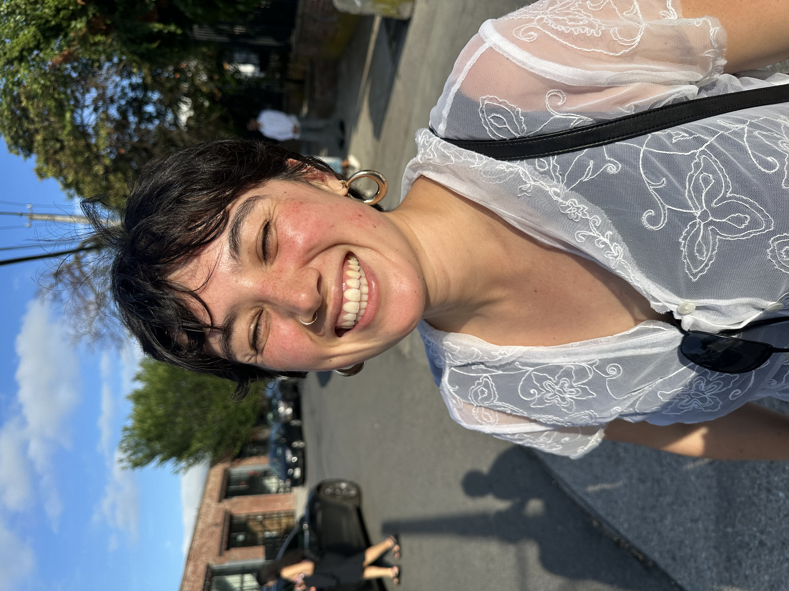

Natalie Gable

Hi! I'm Natalie. I'm an electrical engineer turned data scientist interested in social and environmental justice. Specifically, I like working on hard technical problems that contribute to my community and the world in a positive way. I've worked as a data scientist for a few years but have been a lover of people and our planet, a feminist, and a believer that we have the power to build a better future for much longer.
I currently work as a senior data scientist at the MTA (NYC's public transit agency), working on problems like predictive maintenance and estimating ridership demand. I previously worked at Gro Intelligence, an ag and climate startup (no longer in existence), building crop models. Professionally, I'm interested in how we can leverage data and machine learning to fight the climate crisis.
I hold bachelor's and master's degrees from Stanford University in electrical engineering (mostly signal processing, optimization, ML).
I am (believe it or not) not a website builder. This is my feeble attempt to connect with other like-minded people and hold myself accountable to some personal projects.
I was born and raised in San Francisco. I currently live in Brooklyn.
Projects
Under construction.